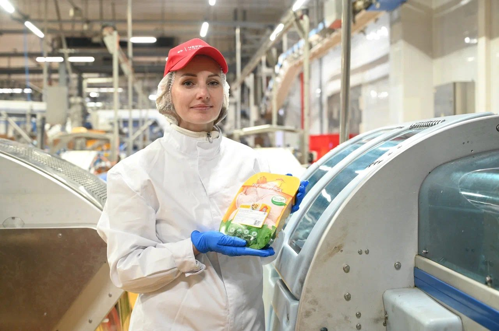

Содержание
Поэтому работать здесь могут специалисты самых разных профессий — от операторов производственных линий до инженеров, технологов, ветеринарных врачей и IT-специалистов.
Разберём, какое образование необходимо для разных направлений, сколько времени занимает обучение и как быстрее начать карьеру.
Можно ли работать на мясокомбинате без образования
Да. Многие производственные профессии не требуют профильного диплома.
Например, предприятия регулярно принимают сотрудников на рабочие должности с обучением непосредственно на производстве. После стажировки новичок осваивает оборудование, требования охраны труда, санитарные нормы и получает необходимые практические навыки.
Именно поэтому среди соискателей стабильно востребованы вакансии на мясокомбинате, где работодатель самостоятельно обучает новым производственным процессам. На крупных предприятиях действуют программы адаптации, наставничества и внутреннего обучения сотрудников.
Какие специалисты нужны современному мясокомбинату
Производство объединяет десятки профессий. Их условно можно разделить на несколько направлений.
Производственные специальности
Это сотрудники, которые непосредственно участвуют в выпуске продукции. К таким профессиям относятся:
- оператор производственной линии;
- оператор автоматизированного оборудования;
- изготовитель мясной продукции/полуфабрикатов;
- жиловщик мяса;
- обвальщик мяса;
- упаковщик;
- комплектовщик;
- кладовщик.
Для большинства рабочих профессий достаточно среднего общего образования и обучения непосредственно на предприятии.
- Образованиесреднее общее
- Подготовкаот нескольких дней до нескольких недель
Технолог пищевого производства
Технолог отвечает за весь процесс изготовления продукции:
- соблюдение рецептур;
- контроль технологических режимов;
- качество готовой продукции;
- внедрение новых технологий;
- оптимизацию производственных процессов.
Для этой профессии обычно получают образование по направлениям:
- технология мяса и мясных продуктов;
- технология продукции общественного питания;
- технология производства и переработки сельскохозяйственной продукции;
- биотехнология пищевых производств.
- Колледж3–4 года
- Вуз4 года (бакалавриат)

Инженер
Современное производство невозможно представить без сложного оборудования. Инженеры отвечают за:
- обслуживание производственных линий;
- ремонт оборудования;
- автоматизацию процессов;
- внедрение новых технологий;
- повышение эффективности производства.
Подходящие направления подготовки:
- технологические машины и оборудование;
- автоматизация технологических процессов;
- мехатроника;
- электротехника;
- промышленная автоматизация.
- Колледжоколо 4 лет
- Университет4–5 лет
Ветеринарный врач
Ветеринарный специалист контролирует мясную продукцию и её состояние: проводит ветеринарно-санитарную экспертизу, проверяет качество и безопасность сырья и готовой продукции.
Необходимо высшее образование по специальности «Ветеринария».
- Образованиевуз
- Срок обучения5–6 лет
Специалист по контролю качества
Безопасность пищевой продукции — один из главных приоритетов любого мясокомбината. Специалисты службы качества:
- проводят лабораторные исследования;
- контролируют соблюдение стандартов;
- проверяют сырьё;
- анализируют готовую продукцию;
- следят за соблюдением требований пищевой безопасности.
Подходящие специальности:
- стандартизация;
- управление качеством;
- биотехнология;
- инженер-химик пищевого производства.
Лаборант
Лаборатории ежедневно исследуют сырьё, воду, упаковку и готовую продукцию. Для работы обычно достаточно среднего профессионального образования по направлениям:
- лабораторная диагностика;
- химический анализ;
- биотехнология;
- пищевая промышленность.
Логист
На крупных предприятиях ежедневно перемещаются тысячи тонн сырья и готовой продукции. Логисты отвечают за:
- поставки;
- складские процессы;
- транспортировку;
- управление запасами;
- эффективность цепочек поставок.
Подойдут направления: логистика, управление цепями поставок, менеджмент.
IT-специалист
Современное производство активно использует цифровые технологии. На мясокомбинатах работают:
- системные администраторы;
- программисты;
- аналитики данных;
- специалисты по информационной безопасности;
- разработчики MES- и ERP-систем.
Получить образование можно по большинству IT-направлений.
Сколько учиться
Продолжительность обучения зависит от выбранной профессии.
| Профессия | Образование | Срок обучения |
|---|---|---|
| Оператор производственной линии | обучение на предприятии | несколько дней — несколько недель |
| Обвальщик | обучение на предприятии | несколько недель |
| Жиловщик | обучение на предприятии | несколько недель |
| Технолог | колледж или вуз | 3–4 года / 4 года |
| Инженер | колледж или вуз | 4–5 лет |
| Ветеринарный врач | вуз | 5–6 лет |
| Лаборант | колледж | 3–4 года |
| Специалист по качеству | колледж или вуз | 3–4 года / 4 года |
Какие направления подготовки наиболее востребованы
Если вы планируете строить карьеру в мясоперерабатывающей отрасли, стоит обратить внимание на специальности, которые наиболее востребованы работодателями:
- технология производства и переработки сельскохозяйственной продукции;
- биотехнология;
- ветеринария;
- технологические машины и оборудование;
- эксплуатация транспортно-технологических машин;
- техносферная безопасность;
- автоматизация производственных процессов.
Именно эти направления регулярно входят в число приоритетных при подготовке молодых специалистов для крупных агропромышленных компаний.
Как быстрее начать карьеру
Необязательно ждать окончания обучения. Многие крупные работодатели приглашают студентов на:
- производственную практику;
- оплачиваемые стажировки;
- дуальное обучение;
- программы наставничества.
Такой подход позволяет получить реальный производственный опыт ещё во время учёбы, познакомиться с будущим коллективом и значительно быстрее адаптироваться после получения диплома.
Как устроиться на работу на мясокомбинат
Если у вас уже есть образование или вы только начинаете профессиональный путь, первым шагом станет изучение требований работодателя.
На крупных предприятиях можно найти предложения как для опытных специалистов, так и для кандидатов без опыта. Многие рабочие профессии предусматривают обучение непосредственно на производстве, а для студентов доступны программы практики и стажировок.
Поэтому сегодня устроиться на работу на мясокомбинат можно разными способами: после колледжа или университета, через производственную практику, дуальное обучение или даже без профильного образования — если вакансия предполагает обучение на рабочем месте.
Карьера в «Черкизово»
Мясоперерабатывающие предприятия Группы «Черкизово» предлагают возможности профессионального развития как начинающим специалистам, так и опытным сотрудникам. Компания сотрудничает с профильными колледжами и вузами, организует практику, стажировки и программы дуального обучения, благодаря которым студенты получают производственный опыт ещё до окончания учёбы. Кроме того, на ряде производственных позиций предусмотрено обучение непосредственно на предприятии, что позволяет начать карьеру даже без профильного опыта.
Коротко
Работа на современном мясокомбинате — это десятки профессий с разными требованиями к образованию и квалификации. Для части производственных специальностей достаточно обучения на предприятии, тогда как технологам, инженерам, ветеринарным врачам и специалистам по качеству потребуется профильное среднее профессиональное или высшее образование.
При выборе направления обучения стоит ориентироваться не только на срок получения диплома, но и на перспективы профессионального роста. Крупные агропромышленные компании заинтересованы в подготовке молодых специалистов, поэтому всё чаще предлагают студентам практику, стажировки и возможность начать карьеру ещё во время учёбы.